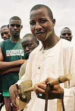

Nigeria 
Ethnic Groups
Nigeria has more than 250 ethnic groups, with varying languages and customs, creating a country of rich ethnic diversity.
The three largest ethnic groups are the Hausa, Yoruba and Igbo, together accounting for more than 70% of the population, while the Edo, Ijaw, Fulɓe, Kanuri, Urhobo-Isoko, Ibibio, Ebira, Nupe, Gbagyi, Jukun, Igala, Idoma and Tiv comprise between 25 and 30%; other minorities make up the remaining 5%.
|

Igbo Chief
|

Yoruba Drummers
|

Hausa lute player
|
The middle belt of Nigeria is known for its diversity of ethnic groups, including the Pyem, Goemai, and Kofyar.
The official population count of each of Nigeria's ethnicities has always remained controversial and disputed as members of different ethnic groups believe the census is rigged to give a particular group (usually believed to be northern groups) numerical superiority.
There are small minorities of British, American, East Indian, Chinese (est. 50,000), white Zimbabwean, Japanese, Greek, Syrian and Lebanese immigrants in Nigeria. Immigrants also include those from other West African or East African nations.
These minorities mostly reside in major cities such as Lagos and Abuja, or in the Niger Delta as employees for the major oil companies. A number of Cubans settled in Nigeria as political refugees following the Cuban Revolution.
In the middle of the 19th century, a number of ex-slaves of Afro-Cuban and Afro-Brazilian descent and emigrants from Sierra Leone established communities in Lagos and other regions of Nigeria.
Many ex-slaves came to Nigeria following the emancipation of slaves in the Americas. Many of the immigrants, sometimes called Saro (immigrants from Sierra Leone) and Amaro (ex-slaves from Brazil) later became prominent merchants and missionaries in these cities.
From Wikipedia
Back to top